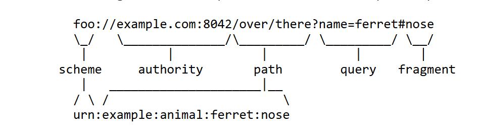
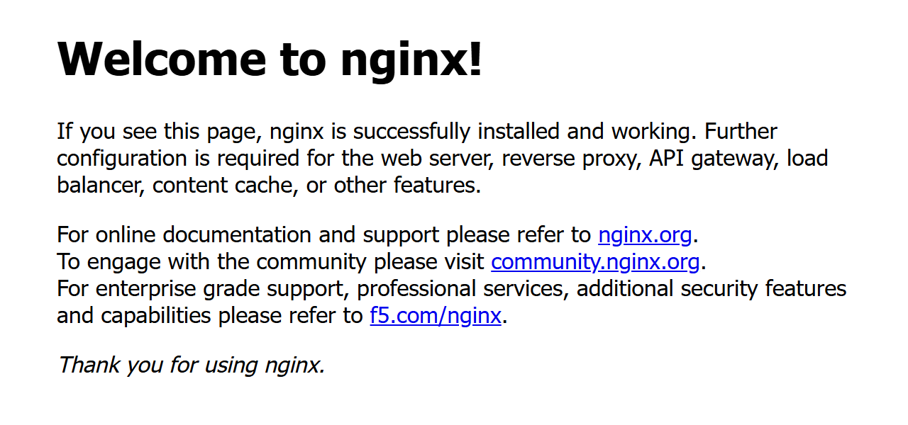

Web không vào được: tìm lỗi ở đâu?
Điện thoại rung, sếp nhắn đúng một câu: "Web không vào được em ơi." Không kèm ảnh chụp, không kèm mã lỗi, không kèm thời điểm bắt đầu. Chỉ có một mô tả mơ hồ về một hệ thống đang hỏng ở đâu đó.
Phản xạ đầu tiên rất dễ hiểu là mở IDE ra đọc lại code, bởi vì code là thứ ta trực tiếp viết ra, hiểu rõ từng dòng và kiểm soát hoàn toàn. Thế nhưng nếu code không đổi một dòng nào kể từ hôm qua, mà hôm qua web vẫn chạy, thì một lập luận loại trừ rất đơn giản cho thấy nguyên nhân gần như chắc chắn không nằm trong code. Một hệ thống đang chạy tốt chỉ hỏng khi có thứ gì đó thay đổi; thứ bạn viết không đổi, vậy thứ đã đổi phải nằm ở chỗ khác.
"Chỗ khác" ấy có một tên gọi chung: hạ tầng (infrastructure), tức mọi thứ nằm giữa người dùng và code của bạn, gồm đường mạng, những máy chủ, và các chương trình chạy trước hoặc sau ứng dụng. Khi chưa có hình dung nào về những gì một lời yêu cầu phải đi qua trước khi chạm tới controller, gặp sự cố ta chỉ biết tìm ở phần mình đã quen. Thứ còn thiếu là một tấm bản đồ của đường đi ấy, và bài này vẽ nó.
Lời yêu cầu nói ở trên có tên chuẩn là request: thông điệp mà trình duyệt gửi đi để xin một thứ gì đó, chẳng hạn "cho tôi dữ liệu của người dùng số 42". Bạn đã viết code xử lý request hằng ngày; bài này nhìn nó từ phía ngược lại, tức đi theo request từ lúc nó được tạo ra trên máy người dùng. Mỗi bước request phải đi qua, ta gọi là một chặng.
người dùng gõ code bạn viết
https://api.example.com/users/42 @GetMapping("/users/{id}")
│ ▲
└──────→ ? ? ? ? ? ──────────┘
những chặng ở giữa:
bài này vẽ chúng raCái tên DevOps ghép hai chữ development (phát triển, tức viết phần mềm) và operations (vận hành, tức giữ cho phần mềm chạy). Nhìn được trọn khoảng giữa ấy, hiểu cả code lẫn những gì nằm quanh nó, là điều kiện để hai việc này được làm cùng nhau. Định nghĩa đầy đủ, lấy từ chuẩn quốc tế về DevOps, nằm ở tab Phía server, khi bản đồ đã vẽ xong và bạn thấy rõ phần nào không phải code của mình.
Câu hỏi của bài
Từ lúc gõ một địa chỉ vào trình duyệt tới lúc code Spring Boot của bạn chạy, request đi qua những chặng nào, và chặng nào thật sự là code của bạn?
Câu hỏi lớn ấy được chia thành ba câu hỏi nhỏ:
- Một URL nói gì, phần nào dành cho hạ tầng, phần nào dành cho code?
- Request đi qua những chặng nào, chặng nào chạy trên máy người dùng, chặng nào chạy trên server?
- Chặng nào là code của bạn, vì sao điều đó quyết định chỗ đi tìm khi có sự cố, và ai lo phần còn lại?
Các tab tiếp theo trả lời ba câu ấy theo đúng thứ tự trên, rồi tab Lab cho bạn tự nhìn thấy các chặng bằng output thật.
Cần đã học trước
Đây là bài đầu tiên, nên chỉ cần biết viết và chạy một ứng dụng Spring Boot trên máy mình: viết
được một controller có @GetMapping, chạy ứng dụng, rồi mở
http://localhost:8080 trong trình duyệt để xem kết quả. Tôi bắt đầu khoá học này với đúng
chừng ấy: viết Spring Boot hằng ngày, nhưng chưa biết gì về những thứ nằm ngoài code. Mọi thuật ngữ hạ tầng
khác được giới thiệu ngay trong bài, đúng chỗ chúng xuất hiện lần đầu.
Mọi hành trình của request bắt đầu từ chuỗi ký tự người dùng gõ vào thanh địa chỉ, nên tấm bản đồ cũng bắt đầu từ đó, với câu hỏi đầu tiên: một URL nói gì, và phần nào của nó là việc của bạn?
Hai đầu của một request: client và server
Mỗi request luôn có hai phía. Phía gửi đi là chương trình người dùng đang dùng, phía nhận và trả lời là một chương trình chạy trên một máy ở xa. Hai vai này có tên chuẩn, và từ đây trở đi bài dùng đúng hai tên đó.
- Client máy khách
- Chương trình gửi request đi và chờ câu trả lời. Trình duyệt là client; lệnh
curlmà bạn sẽ chạy ở tab Lab cũng là client. - Server máy chủ
- Chương trình nhận request và gửi câu trả lời (response). Chữ "server" cũng được dùng để chỉ cái máy mà chương trình ấy chạy trên đó; trong bài này, nghĩa nào đang được dùng sẽ rõ theo ngữ cảnh.
Đọc cho đúng một URL
Người dùng thấy URL (Uniform Resource Locator, địa chỉ tài nguyên) như một khối liền, nhưng client đọc nó như một cấu trúc gồm năm phần. Mỗi phần được giao cho một bộ phận khác nhau xử lý, nên hiểu đúng sự phân công này là bước đầu tiên để biết một lỗi thuộc về ai.
https://api.example.com:443/users/42?active=true
└─┬─┘ └──────┬───────┘ └┬┘└───┬──┘└─────┬────┘
scheme host port path querypath và query là thứ
code Spring Boot của bạn thực sự đọc tới.- scheme giao thức
- Phần đứng trước
://, cho biết client sẽ nói chuyện với server bằng giao thức nào:http(không mã hoá) hayhttps(có mã hoá). - host tên máy chủ
- Một cái tên dành cho con người đọc, như
api.example.com. Cái tên này còn gọi là tên miền (domain name). - port cổng
- Một con số chỉ ra chương trình nào trên máy đích sẽ nhận request. Một máy có thể chạy nhiều chương trình cùng nhận request, mỗi chương trình ở một port riêng. Port được học kỹ ở Bài 01.
- path đường dẫn
- Phần chỉ ra tài nguyên bên trong ứng dụng, như
/users/42. Đây là phần@GetMappingcủa bạn khớp vào. - query chuỗi truy vấn
- Phần sau dấu
?, gồm các cặp khoá và giá trị nhưactive=true. Trong Spring Boot, đây là thứ@RequestParamđọc ra.

#. Fragment là phần duy nhất trình duyệt không bao giờ gửi lên server: nó chỉ dùng ở phía
trình duyệt, chẳng hạn để nhảy tới một mục trong trang.Trong năm phần ấy có ba quan sát, và mỗi quan sát dẫn thẳng tới một chặng trên bản đồ ở tab sau.
Quan sát thứ nhất: host là một cái tên, còn mạng cần một địa chỉ
Mạng máy tính không chuyển dữ liệu tới một cái tên. Nó chỉ biết chuyển tới một địa chỉ
IP: con số định danh một máy trên mạng, với loại địa chỉ phổ biến nhất được viết thành bốn số
như 104.20.23.154, một trong các địa chỉ của example.com mà bạn sẽ thấy ở tab
Lab. Nói chính xác hơn, địa chỉ IP gắn với từng card mạng của máy, chẳng hạn card WiFi, chứ không gắn
với cả cái máy; Bài 01 sẽ đi sâu vào điểm này.
Do đó giữa lúc người dùng gõ tên và lúc client gửi được dữ liệu đầu tiên, luôn có một bước dịch tên thành địa chỉ. Bước dịch ấy do một hệ thống riêng đảm nhiệm, gọi là DNS (Domain Name System, hệ thống tên miền): một mạng lưới máy chủ trải khắp thế giới, chuyên trả lời câu hỏi "tên này ứng với địa chỉ nào". Hệ quả thực tế là DNS trở thành một chặng có thể hỏng độc lập với mọi thứ khác. Tên miền quên gia hạn, nhà cung cấp DNS gặp sự cố: cả hai đều khiến web "không vào được" dù server và code hoàn toàn khoẻ mạnh.
Quan sát thứ hai: scheme quyết định port mặc định
Khi URL không ghi port, client tự điền một con số theo scheme: http:// đi kèm port
80, https:// đi kèm port 443. Quy ước này nằm trong chuẩn HTTP
(RFC 9110). Đây là lý do bạn chưa bao giờ phải gõ port khi vào một website công cộng, nhưng luôn phải gõ
:8080 khi chạy Spring Boot trên máy mình: ứng dụng của bạn nhận request ở một port không
phải mặc định, nên trình duyệt không thể tự đoán. Ở tab Phía server, bạn sẽ thấy ai đứng ở port 443 trên
một server thật, và vì sao người dùng không bao giờ phải biết con số 8080.
Quan sát thứ ba: path và query là phần hạ tầng không đọc
Không thành phần hạ tầng nào hiểu /users/42 nghĩa là "người dùng số 42". DNS chỉ cần
host; phần lớn các chương trình trung gian chỉ chuyển nguyên văn path vào trong. Chỉ ứng dụng, tức code
bạn viết, mới gán ý nghĩa cho path và query. Nói cách khác, URL tự chia làm hai: ba phần đầu là việc
của hạ tầng, hai phần cuối là việc của bạn.
Khi viết @GetMapping("/users/{id}"), thứ bạn khai báo chỉ là phần path.
Ba phần đứng trước, cùng với việc tìm ra và kết nối tới đúng máy, đã được xử lý xong ở đâu đó
trước khi request chạm tới controller của bạn.
Một URL gồm năm phần. Scheme, host và port là việc của hạ tầng: chúng quyết định request được mã hoá hay không, đi tới máy nào, và chương trình nào trên máy đó nhận. Path và query là việc của code bạn.
Hạ tầng xử lý ba phần đầu qua những bước nào, theo thứ tự nào?
Biết URL nói gì rồi, giờ hãy theo request đi một vòng: từ lúc trình duyệt tách xong URL tới lúc controller của bạn chạy, nó ghé qua những đâu? Hình 4 dưới đây trả lời ở mức toàn cảnh. Bạn sẽ còn gặp lại hình này ở gần như mọi bài sau, vì mỗi công cụ của lộ trình gắn vào một hoặc vài chặng trên nó.
Vì sao trên máy bạn chỉ thấy vài bước, còn trên server thật có chín
Lúc bạn đang code, mọi thứ nằm trên một máy và đường đi rất ngắn. Trình duyệt gọi thẳng
localhost:8080, Spring Boot nhận request, đọc database, rồi trả lời. Không có tên miền để
dịch, không có ai mã hoá, không có ai chặn ở giữa.
trình duyệt ──→ localhost:8080 ──→ Spring Boot ──→ PostgreSQL
cùng một máy, không qua mạng thậtKhi ứng dụng được đưa lên một server để người dùng thật truy cập qua Internet, khoảng cách xa hơn và môi trường không còn an toàn như trên máy bạn. Bốn thành phần mới buộc phải xuất hiện, và mỗi thành phần tồn tại để giải quyết đúng một vấn đề mà máy dev chưa có.
| Thành phần | Vì sao phải có |
|---|---|
| DNS | Người dùng chỉ biết cái tên api.example.com, không biết địa chỉ IP của server. |
| TLS | Dữ liệu đi qua Internet phải được mã hoá, và trình duyệt phải kiểm chứng được máy bên kia đúng là api.example.com. |
| Firewall | Server giờ phơi ra toàn bộ Internet, nơi các chương trình tự động dò quét liên tục; phải có một lớp chặn những gì không được phép vào. |
| Nginx | Phải có một chương trình đứng trước ứng dụng: nhận request ở port 443, gỡ lớp mã hoá, rồi chuyển request vào trong. |
Tấm bản đồ chín chặng
Ghép bốn thành phần ấy với những gì đã có, ta được tấm bản đồ đầy đủ trong Hình 4. Đọc nó từ trên xuống, theo đúng thứ tự request đi qua: nửa trên diễn ra trên máy người dùng, nửa dưới diễn ra trên server, và ở giữa là Internet.
┌─────────────────── máy người dùng ──────────────────────┐
│ Trình duyệt tách URL: scheme, host, port, path │
│ DNS hỏi "api.example.com là địa chỉ nào?" │
│ được trả lời: 203.0.113.10 │
│ TCP mở kết nối tới 203.0.113.10, port 443 │
│ TLS kiểm tra chứng chỉ, bật mã hoá │
│ HTTP gửi "GET /users/42" kèm các header │
└───────────────────────────┬─────────────────────────────┘
│
~~~ Internet ~~~
│
┌──────────── server (một máy chạy suốt ngày đêm) ────────┐
│ Firewall dữ liệu tới port 443 có được vào? │
│ Nginx nhận ở port 443, gỡ mã hoá, đọc Host, │
│ chuyển request vào ứng dụng │
│ Spring Boot nhận ở port 8080, chạy code của bạn │
│ PostgreSQL nhận ở port 5432, đọc và ghi dữ liệu │
└─────────────────────────────────────────────────────────┘203.0.113.10 thuộc một dải dành riêng cho ví dụ trong tài liệu.Mỗi chặng có một thành phần phụ trách và một kiểu hỏng riêng, và mỗi chặng được học kỹ ở một bài cụ thể của lộ trình. Bảng 2 tóm tắt từng chặng bằng một câu, để các tên gọi trong Hình 4 có nghĩa ngay từ bây giờ; hai tab sau giải thích chúng đủ để hiểu bản đồ.
| Thành phần | Chạy ở đâu | Làm gì | Học kỹ ở |
|---|---|---|---|
| Trình duyệt | máy người dùng | Tách URL thành các phần, điền port mặc định nếu thiếu. | bài này |
| DNS | máy người dùng hỏi, máy chủ DNS trả lời | Dịch tên miền thành địa chỉ IP. | Bài 20 |
| TCP | máy người dùng và server | Mở một kết nối tin cậy tới đúng địa chỉ IP và port. | Bài 01 |
| TLS | máy người dùng và server | Kiểm tra giấy tờ điện tử chứng minh server đúng là tên miền nó nhận (gọi là chứng chỉ), rồi mã hoá mọi thứ gửi sau đó. | Bài 20 |
| HTTP | máy người dùng | Gửi request: phương thức, path, các header. | Bài 02 |
| Firewall | server | Cho phép hoặc chặn dữ liệu đi vào theo luật. | Bài 01, Bài 17 |
| Nginx | server | Nhận request thay ứng dụng, gỡ mã hoá, chuyển vào trong. | Bài 19 |
| Spring Boot | server | Chạy code của bạn. | Bài 03, Bài 08 |
| PostgreSQL | server | Lưu và trả dữ liệu cho ứng dụng. | Bài 11 |
Vì sao thứ tự là TCP, rồi TLS, rồi HTTP
Ba bước mở kết nối TCP, bắt tay TLS và gửi request HTTP đi theo một thứ tự không tuỳ tiện: mỗi bước
chạy bên trên bước trước nó và cần bước trước đã xong. Kết nối TCP phải được mở xong trước, vì TLS là một
cuộc trao đổi diễn ra bên trong kết nối đó. Chỉ khi TLS đã bật mã hoá, trình duyệt mới gửi dòng
GET /users/42. Hệ quả là path và các header của request, kể cả cookie đăng nhập, đi qua
Internet ở dạng đã mã hoá.
Cách tổ chức này có tên chuyên môn là phân tầng (layering): mỗi tầng chỉ dựa vào dịch vụ của tầng ngay bên dưới, nên có thể sửa hoặc thay một tầng mà không phải viết lại các tầng khác. Vì vậy TCP, TLS và HTTP được định nghĩa bởi ba văn bản chuẩn riêng, viết độc lập với nhau; số hiệu của từng văn bản, cùng văn bản chuẩn của DNS, nằm ở mục Nguồn đọc thêm cuối bài.
Request đi qua chín chặng. Năm chặng đầu chạy trên máy người dùng, bốn chặng sau chạy trên server, và ở giữa là Internet. Bốn trong chín chặng (DNS, TLS, firewall, Nginx) chỉ xuất hiện khi ứng dụng rời máy dev để lên một server thật.
Mỗi chặng thật sự làm gì, và khi hỏng thì trông ra sao? Bắt đầu từ những chặng chạy trên máy người dùng.
Năm chặng trong khung trên của Hình 4 diễn ra trên chính máy người dùng, trước khi một byte nào của request tới được server. Phần này đi chậm qua từng chặng ấy với một mục tiêu: nhận ra mỗi chặng khi nó hỏng. Học kỹ từng chặng là việc của các bài sau.
Trình duyệt tách URL
Việc đầu tiên trình duyệt làm là tách URL thành năm phần như ở tab URL, rồi điền port mặc định nếu
URL không ghi. Từ https://api.example.com/users/42, nó biết sẽ dùng HTTPS, cần tìm địa chỉ
của api.example.com, sẽ kết nối tới port 443, và sẽ xin path /users/42.
Bước này hiếm khi hỏng, trừ khi chính URL gõ sai.
DNS dịch tên thành địa chỉ
Để biết gửi dữ liệu tới đâu, máy người dùng phải hỏi DNS. Nó không tự biết câu trả lời: hệ điều hành gửi câu hỏi tới một máy chủ DNS mà nó được cấu hình để dùng, thường là router trong nhà hoặc máy chủ của nhà mạng, và máy chủ đó trả lời (hoặc đi hỏi tiếp giúp). Chủ tên miền khai báo câu trả lời gốc dưới dạng các bản ghi DNS: mỗi bản ghi là một dòng ghi rằng tên này ứng với địa chỉ này.
Bạn có thể tự hỏi DNS bằng lệnh nslookup, có sẵn trên cả Windows lẫn Linux. Đây là output
thật khi tôi chạy Lab 1 trên máy mình ngày 24/09/2026, trong Git Bash trên Windows (tên router nhà tôi đã
được ẩn):
$ nslookup github.com
Server: (tên router, đã ẩn)
Address: fe80::10
Non-authoritative answer:
Name: github.com
Address: 20.205.243.166github.com. Khối trên cho biết ai
đã trả lời (router trong nhà, liên lạc qua một địa chỉ fe80::… chỉ dùng được trong mạng
nội bộ, học ở Bài 01), khối dưới cho biết câu trả lời là gì.Nếu tên miền không tồn tại, máy chủ DNS trả lời đúng điều đó, và hành trình của request dừng ngay ở bước hỏi DNS:
$ nslookup khong-ton-tai-dau-nhe-12345.com
*** (tên router, đã ẩn) can't find khong-ton-tai-dau-nhe-12345.com: Non-existent domainNXDOMAIN: tên miền không tồn tại.Điều đáng để ý ở Hình 6 là những gì chưa xảy ra. Khi DNS trả lời "không có tên này", client chưa có địa chỉ nào để kết nối, nên chưa có bước mở kết nối, bắt tay TLS hay gửi request nào cả; server, Nginx hay code của bạn không hề biết có người vừa thử vào. Trang Đọc output thật giải thích từng dòng của hai output này kỹ hơn.
TCP mở kết nối
Có địa chỉ rồi, client bắt đầu gửi dữ liệu. Trên mạng, dữ liệu không đi thành một khối liền mà được cắt thành những mẩu nhỏ gọi là gói tin (packet). Mỗi gói tin mang phần đầu ghi địa chỉ nơi gửi và nơi nhận, giống cách mỗi request HTTP mang các header.
Gói tin không bay thẳng tới server. Nó đi qua nhiều router: thiết bị nối các mạng với nhau, nhận gói tin từ mạng này và chuyển sang mạng khác gần đích hơn. Router đầu tiên là chiếc router trong nhà người dùng; sau nó là các router của nhà mạng, rồi của các mạng trung gian, cho tới mạng nơi server đặt.
Gói tin rời rạc như vậy có thể mất, tới sai thứ tự, hoặc tới hai lần. TCP
(Transmission Control Protocol) là giao thức giải quyết đúng chuyện đó: trước khi gửi dữ liệu,
hai máy trao đổi vài gói tin để thoả thuận mở một kết nối, rồi đánh số mọi gói tin gửi sau, gửi
lại gói bị mất và xếp lại đúng thứ tự. Kết nối được mở tới một địa chỉ IP và một port cụ thể, ở đây là
203.0.113.10 và port 443.
Bước mở kết nối thường là chỗ hỏng đầu tiên khi đưa ứng dụng cho người khác dùng, và nó hỏng theo hai kiểu rất khác nhau: bị từ chối ngay lập tức, hoặc chờ mãi không thấy trả lời. Bài 01 dành trọn cho bước này.
TLS mã hoá và chứng minh danh tính
Chữ s trong https nghĩa là dữ liệu đi qua một lớp bảo mật tên là
TLS (Transport Layer Security). TLS làm hai việc. Việc thứ nhất là
chứng minh danh tính: bảo đảm máy đang trả lời đúng là api.example.com, chứ không
phải một máy mạo danh. Việc thứ hai là mã hoá: biến mọi dữ liệu gửi sau đó thành dạng người đứng
giữa không đọc được. Thứ tự này có lý do: nếu máy ở đầu kia là máy mạo danh thì mã hoá kỹ đến đâu, dữ
liệu vẫn tới đúng tay máy mạo danh ấy.
Để chứng minh danh tính, server trình ra một chứng chỉ (certificate): một tài liệu điện tử ghi rằng nó thuộc về tên miền nào và còn hiệu lực tới khi nào.
Ai cũng có thể tự viết ra một tài liệu như thế, nên chứng chỉ chỉ đáng tin vì nó được ký bởi một CA (Certificate Authority, tổ chức cấp chứng chỉ): một tổ chức mà trình duyệt và hệ điều hành đã tin sẵn từ khi được cài đặt. Trình duyệt kiểm tra chữ ký của CA, kiểm tra tên miền và hạn dùng, rồi mới tiếp tục.
Lab 3 đọc chứng chỉ thật của example.com bằng lệnh openssl. Đây là kết quả khi tôi
chạy nó ngày 24/09/2026:
subject=CN=example.com
issuer=C=US, O=SSL Corporation, CN=Cloudflare TLS Issuing ECC CA 3
notBefore=Jul 29 22:10:08 2026 GMT
notAfter=Oct 27 22:17:21 2026 GMTexample.com, đọc ngày 24/09/2026:
cấp cho ai (subject), ai ký (issuer), hiệu lực từ ngày nào tới ngày nào.Hai dòng cuối cho thấy chứng chỉ này chỉ có hiệu lực 90 ngày, từ 29/07 tới 27/10. Chứng chỉ có hạn dùng, nên một website có thể hỏng ở bước bắt tay TLS vào đúng ngày chứng chỉ hết hạn, dù không ai đụng vào gì. Vì sao chứng chỉ được cấp ngắn hạn như vậy, và làm sao gia hạn tự động, là nội dung của Bài 20.
Gửi request HTTP
Chỉ khi DNS đã trả lời, kết nối TCP đã mở và TLS đã bật mã hoá, trình duyệt mới gửi request.
HTTP
(Hypertext Transfer Protocol) là quy ước về cách viết request và response. Một request HTTP là
một đoạn chữ có cấu trúc: dòng đầu gồm phương thức (GET, POST…), path và phiên
bản giao thức; tiếp theo là các header, mỗi dòng một cặp tên và giá trị. Đây là request
thật mà curl gửi đi ở Lab 2:
> GET / HTTP/1.1
> Host: example.com
> User-Agent: curl/8.21.0
> Accept: */*> đầu dòng là cách
curl -v đánh dấu dữ liệu gửi đi.Dòng Host: example.com mang lại tên miền vào bên trong request. Lý do nó cần có mặt: một
server có thể phục vụ nhiều website cùng lúc trên cùng một địa chỉ IP, và header Host là thứ
cho server biết request này dành cho website nào. Ở tab sau, bạn sẽ thấy Nginx dùng chính dòng này.
Trên máy người dùng, request đi qua năm chặng: tách URL, hỏi DNS, mở kết nối TCP, bắt tay TLS, gửi HTTP. Chặng nào hỏng thì hành trình dừng ở đó, và mọi chặng phía sau, kể cả code của bạn, không hề biết có request.
Khi request HTTP đã được gửi, các gói tin rời máy người dùng. Chúng còn đi qua những đâu trước khi tới code của bạn?
Request đã rời máy người dùng. Phần này theo nó qua Internet, qua firewall, Nginx, ứng dụng và database trên server, rồi trả lời câu hỏi còn lại của bài: trong chín chặng ấy, chặng nào là của bạn, và ai lo những chặng còn lại?
Internet: phần bạn không kiểm soát
Dòng ~~~ Internet ~~~ trong Hình 4 là chuỗi router và đường truyền nằm giữa mạng của người
dùng và mạng của server. Bạn không sở hữu và không cấu hình được bất cứ thứ gì ở đó. Điều duy nhất bạn
quyết định được là hai đầu: request được gửi đi đúng cách, và server ở đầu kia sẵn sàng nhận.
Firewall cho qua hoặc chặn
Gói tin đầu tiên tới server gặp ngay firewall (tường lửa): một bộ lọc chạy trên server hoặc trước server, xem từng gói tin đi vào và quyết định cho qua hay chặn, dựa trên các luật như "chỉ cho phép kết nối tới port 443". Firewall đứng trước mọi chương trình trên server; gói tin bị nó chặn thì không chương trình nào thấy cả. Lý do phải có nó đã nêu ở Bảng 1: server phơi ra Internet, nơi luôn có những chương trình tự động dò tìm port nào đang mở. Bài 01 sẽ cho thấy một gói tin bị firewall chặn để lại triệu chứng gì ở phía client.
Nginx nhận request thay ứng dụng
Ở port 443 trên server, chương trình nhận kết nối là một reverse proxy, chưa phải ứng dụng của bạn. Reverse proxy là chương trình đứng trước ứng dụng, nhận request từ bên ngoài thay cho ứng dụng, rồi tự mở một request khác tới ứng dụng ở bên trong và chuyển câu trả lời ngược ra. Người dùng chỉ nói chuyện với reverse proxy; họ không bao giờ kết nối thẳng tới ứng dụng.
Trong lộ trình này, reverse proxy là Nginx, một chương trình mã nguồn mở phổ biến
cho đúng vai trò ấy. Nginx làm ba việc: gỡ lớp mã hoá TLS, đọc header Host để biết request
dành cho website nào, rồi chuyển request vào ứng dụng đang chạy ở port 8080. Nhờ Nginx đứng ở port 443,
người dùng không bao giờ phải biết con số 8080 tồn tại.

Vì sao gần như mọi hệ thống thật đều đặt một reverse proxy trước ứng dụng, dù Spring Boot tự nhận request được, là câu hỏi của Bài 19. Ở bài này chỉ cần nắm vị trí của nó trên bản đồ: ngay trước code của bạn.
Ứng dụng của bạn và database
Sau Nginx là ứng dụng Spring Boot. Bên trong nó có một web server nhúng (mặc định là Tomcat) nhận request ở port 8080, tìm controller có path khớp, rồi chạy code của bạn. Trên server thật, ứng dụng thường được cấu hình chỉ nhận kết nối từ chính máy đó, nên chỉ Nginx gọi vào được; không ai từ Internet chạm thẳng tới port 8080. Bài 01 giải thích cấu hình đó nằm ở đâu.
Cuối đường đi là database, ở đây là PostgreSQL nhận kết nối ở port 5432. Code của bạn mở kết nối tới nó để đọc và ghi dữ liệu, rồi dùng kết quả để viết response. Database cũng chỉ nhận kết nối từ ứng dụng, không bao giờ từ Internet. Response đi ngược lại đúng con đường cũ: từ Spring Boot ra Nginx, qua Internet, về trình duyệt.
Chặng nào là code của bạn
Giờ có thể trả lời chặng nào là code của bạn. Trong cả đường đi, chỉ ứng dụng là code bạn viết. Tám chặng còn lại là hạ tầng: chương trình của người khác, cấu hình của người vận hành, hoặc mạng của các nhà cung cấp. Mỗi chặng ấy có thể hỏng mà code của bạn không đổi một dòng. Vì vậy khi nhận tin nhắn "web không vào được" mà code không đổi dòng nào từ hôm qua, cần nghi tám chặng hạ tầng trước, rồi mới tới phần code bạn quen nhất.
DevOps: ai lo cho tám chặng còn lại
Câu trả lời ấy kéo theo một câu hỏi khác: nếu tám chặng không phải code của bạn, thì ai lo cho chúng? Trong một thời gian dài, câu trả lời thường là một đội khác. Đội phát triển (development, gọi tắt là dev) viết ứng dụng; đội vận hành (operations, gọi tắt là ops) giữ server, mạng, firewall, Nginx và database. Dev viết xong thì bàn giao, ops nhận về và đưa lên server. Cách chia ấy lộ điểm yếu đúng lúc có sự cố: dev chỉ nhìn thấy code của mình nên kết luận "lỗi ở server", ops thấy server vẫn chạy nên kết luận "lỗi ở code", và không ai nhìn được cả chín chặng cùng lúc.
DevOps là tập hợp các nguyên tắc và cách làm giúp các bên liên quan giao tiếp và cộng tác tốt hơn, nhằm đặc tả, phát triển và vận hành các sản phẩm và dịch vụ phần mềm và hệ thống, đồng thời cải tiến liên tục mọi khía cạnh trong vòng đời của chúng.
Đây là định nghĩa ở mục 3.1 của chuẩn IEEE 2675-2021 (IEEE Standard for DevOps), về sau được chấp nhận thành chuẩn quốc tế ISO/IEC/IEEE 32675:2022. Nguyên văn: "DevOps: Set of principles and practices which enable better communication and collaboration between relevant stakeholders for the purpose of specifying, developing, and operating software and systems products and services, and continuous improvements in all aspects of the life cycle."
Cái tên có trước chuẩn hơn mười năm. Nó lan ra từ hội nghị devopsdays đầu tiên, tổ chức ở Ghent, Bỉ, năm 2009, với tên ghép từ hai chữ development và operations. Vì sao hai đội từng tách ra, vì sao cách làm ấy hết dùng được, và ngày nay người ta đo DevOps bằng gì, được kể trong phụ lục Lịch sử DevOps.
Đọc định nghĩa ấy trên tấm bản đồ, các bên liên quan (stakeholders, những người có phần trong việc phần mềm được làm ra và chạy ra sao) trước hết là người viết ứng dụng và người giữ cho phần còn lại của đường đi chạy được: server, firewall, Nginx, database. Trong công việc hằng ngày, sự cộng tác giữa họ thường hiện ra thành ba việc. Người viết ứng dụng hiểu và cùng chịu trách nhiệm cho hạ tầng mà ứng dụng chạy trên đó. Những bước lặp lại giữa code và server được tự động hoá. Hệ thống được đo đạc để biết nó đang tốt lên hay xấu đi, tức là để có căn cứ cho việc cải tiến liên tục mà định nghĩa nhắc tới. Ba việc này là lời diễn giải của bài giảng, không trích từ chuẩn.
Mục 5.2 của chuẩn liệt kê các nguyên tắc của DevOps, và một trong số đó gắn thẳng với bài này: tư duy hệ thống (systems thinking, mục 5.2.4). Theo chuẩn, nguyên tắc này chống lại lối làm việc thiển cận là dùng những chuyên gia (như người lo mạng, người quản trị database, người quản trị hệ thống) hiếm khi trao đổi với đội phát triển hoặc đội vận hành và không hiểu hệ thống như một tổng thể. Chuẩn viết rằng trong DevOps, nhìn bao quát khuyến khích người làm kỹ thuật hiểu trọn hệ thống từ đầu tới cuối. Với một request, "từ đầu tới cuối" là chín chặng của Hình 4, và tấm bản đồ trong bài này là bước đầu của việc hiểu trọn ấy.
Với bạn, điều đó có một hệ quả cụ thể: phần còn lại của lộ trình là lần lượt học cách cùng chịu trách nhiệm cho tám chặng kia. Bạn sẽ đóng gói ứng dụng để nó chạy giống nhau trên mọi máy; tự đưa nó lên một server thật, đặt Nginx, tên miền và HTTPS phía trước; tự động hoá chính những bước vừa làm tay; rồi giữ nó chạy ổn định trên nhiều máy, có số liệu và cảnh báo. Bài nào cũng bắt đầu từ tấm bản đồ này, vì muốn chịu trách nhiệm cho một chặng thì trước hết phải biết nó nằm ở đâu và hỏng ra sao.
Trong chín chặng, chỉ ứng dụng là code bạn viết; tám chặng còn lại là hạ tầng, và là nơi đầu tiên cần nghi khi code không đổi mà web vẫn hỏng. DevOps, theo chuẩn IEEE 2675-2021, là các nguyên tắc và cách làm giúp người viết phần mềm và người giữ nó chạy cộng tác suốt vòng đời của nó, bắt đầu từ việc cùng hiểu trọn đường đi này.
Làm sao thấy tận mắt những chặng không phải code của mình, ngay trên máy bạn?
Ba lab dưới đây dùng output thật để cho bạn thấy, ngay trên máy mình, bước hỏi DNS, bước mở kết nối TCP, bước bắt tay TLS, bước gửi request HTTP, và dấu vết của một reverse proxy ở phía server. Bước tự gây lỗi nằm ngay ở Lab 1. Chạy tất cả trong Git Bash trên Windows.
# Lab 1 — DNS
nslookup github.com
nslookup khong-ton-tai-dau-nhe-12345.com
# Lab 2 — DNS, TCP, TLS, HTTP và reverse proxy nối tiếp nhau
curl -v https://example.com
# Lab 3 — TLS: đọc chứng chỉ của một website thật
echo | openssl s_client -connect example.com:443 -servername example.com 2>/dev/null \
| openssl x509 -noout -subject -issuer -datesLab 1 — DNS, và một tên miền không tồn tại
Lệnh đầu tiên hỏi địa chỉ của github.com; output đã có ở Hình 5. Lệnh thứ hai là bước
tự gây lỗi: hỏi một tên miền chắc chắn chưa ai đăng ký. Kết quả Non-existent
domain ở Hình 6 là bước hỏi DNS hỏng ở dạng đơn giản nhất. Câu hỏi để tự trả lời trước khi đọc
tiếp: lúc nhận câu trả lời ấy, request đã đi tới đâu trên bản đồ? Đáp án: chưa qua khỏi bước hỏi DNS.
Không có kết nối nào được mở, nên mọi suy đoán kiểu "server chết" hay "firewall chặn" đều bị loại
ngay.
Lab 2 — một request trọn vẹn
Cờ -v (verbose) bảo curl kể lại từng bước nó làm. Ký tự đầu mỗi dòng cho
biết dòng đó thuộc loại nào: * là lời curl tự kể (đang hỏi DNS, đang kết nối,
đang bắt tay TLS), > là dữ liệu gửi đi, < là dữ liệu nhận về. Đây là
những dòng chính trong output thật trên máy tôi ngày 24/09/2026, xếp theo thứ tự các chặng trên bản
đồ:
* IPv4: 104.20.23.154, 172.66.147.243 ← DNS đã trả lời
* Established connection to example.com
(104.20.23.154 port 443) ← TCP: kết nối đã mở
* ALPN: server accepted http/1.1 ← bắt tay TLS xong
> GET / HTTP/1.1 ← request HTTP đi ra
> Host: example.com
< HTTP/1.1 200 OK ← response đi về
< Server: cloudflare ← reverse proxy đã trả lờicurl -v https://example.com, rút gọn và ghi chú từng
chặng. Dòng đầu liệt kê các địa chỉ IPv4, tức loại địa chỉ bốn số đã gặp ở tab URL. Bản đầy
đủ và cách đọc từng dòng nằm ở trang
Đọc output thật.Dòng cuối, Server: cloudflare, cho biết ai đã trả lời request. Request tới
example.com được trả lời bởi một reverse proxy của công ty Cloudflare, đặt ở giữa người dùng
và máy của chủ website. Trên bản đồ, nó đứng đúng vị trí của Nginx, chỉ khác là do một nhà cung cấp lớn
vận hành.
Lab 3 — đọc chứng chỉ
Bản curl đi kèm Git for Windows không in thông tin chứng chỉ (lý do nằm ở trang Đọc
output thật), nên lab này dùng openssl, một bộ công cụ mật mã có sẵn trong Git Bash. Output đã
có ở Hình 7. Câu lệnh dài vì nó nối hai lệnh openssl với nhau; dấu | (đưa output
của lệnh trước làm input của lệnh sau) và phần 2>/dev/null (giấu các dòng chẩn đoán) được
giải nghĩa ở Bài 04, khi bạn học shell. Câu hỏi của lab: chứng chỉ do ai ký, và còn bao nhiêu ngày thì hết
hạn? Với output ở Hình 7, chạy ngày 24/09/2026, câu trả lời là 33 ngày. Chạy hôm nay, bạn sẽ thấy một
chứng chỉ khác với những ngày khác, vì chứng chỉ được thay định kỳ trước khi hết hạn; cách đọc thì giữ
nguyên.
Tự vẽ lại bản đồ
Bước cuối của lab không cần lệnh nào: đóng tài liệu lại, lấy giấy ra vẽ chín chặng theo thứ tự, ghi bên cạnh mỗi chặng nó chạy ở đâu và output nào trong ba lab vừa rồi đã cho bạn nhìn thấy nó. Chặng nào bạn không gắn được với một dòng output nào, đó là chặng các bài sau sẽ cho bạn nhìn thấy.
Ba lệnh có sẵn trên máy, nslookup, curl -v và openssl, đủ để
nhìn thấy DNS, kết nối TCP, bắt tay TLS, request HTTP, và cả dấu vết của một reverse proxy phía
server. Một tên miền không tồn tại cho thấy request có thể dừng rất sớm, trước cả khi rời máy người
dùng.
Tự kiểm tra
Bấm vào từng dòng khi bạn tự trả lời được mà không nhìn lại tài liệu. Tiêu chuẩn tự chấm: giải thích được cho một người chưa học bài này, bằng lời của mình, kèm một ví dụ.
- Giải thích được từng phần của
https://example.com:443/users/42?x=1, và phần nào là việc của code - Kể được chín chặng theo đúng thứ tự, và chặng nào chạy ở đâu
- Chỉ ra được một dòng output của
curl -vthuộc chặng nào - Nói được khi gặp
Non-existent domainthì request đã dừng ở chặng nào - Đọc được ai ký chứng chỉ của một website và khi nào nó hết hạn
- Nói được vì sao trong chín chặng chỉ ứng dụng là code của bạn, và điều đó đổi cách bạn tìm lỗi ra sao
- Nói lại được định nghĩa DevOps của chuẩn IEEE 2675-2021 bằng lời của mình, và chỉ ra các bên liên quan trong định nghĩa ấy là ai trên tấm bản đồ chín chặng
Những chỗ hay hiểu sai
| Dễ nghĩ là | Thực tế | Xem lại |
|---|---|---|
| Web không vào được thì mở code ra xem trước. | Code không đổi thì nguyên nhân thường nằm ở tám chặng hạ tầng. | Phía server |
| Chứng chỉ là thứ gắn tên miền với địa chỉ IP. | Gắn tên với địa chỉ là việc của DNS. Chứng chỉ, được kiểm tra lúc bắt tay TLS, chứng minh rằng máy đang trả lời có quyền dùng tên miền đó. | TLS |
nslookup tự biết địa chỉ của mọi tên miền. | Nó chỉ hỏi một máy chủ DNS rồi in lại câu trả lời; dòng Server: cho biết ai đã trả lời. | DNS |
| DevOps là một công cụ, hoặc tên một chức danh. | Chuẩn IEEE 2675-2021 định nghĩa DevOps là một tập hợp nguyên tắc và cách làm giúp các bên liên quan cộng tác tốt hơn suốt vòng đời phần mềm. Công cụ chỉ giúp áp dụng các nguyên tắc ấy. | DevOps |
Kết lại
Câu hỏi của bài là: từ lúc gõ một địa chỉ vào trình duyệt tới lúc code Spring Boot của bạn chạy, request đi qua những chặng nào, và chặng nào thật sự là code của bạn? Câu trả lời là chín chặng: trình duyệt, DNS, mở kết nối, mã hoá, gửi request, firewall, reverse proxy, ứng dụng, database. Năm chặng đầu diễn ra trên máy người dùng, bốn chặng sau trên server, và ở giữa là Internet. Trong cả đường đi, chỉ ứng dụng là code bạn viết; tám chặng còn lại là hạ tầng, và khi code không đổi mà web hỏng thì đó là nơi cần nghi trước.
Chuẩn IEEE 2675-2021 định nghĩa DevOps là tập hợp các nguyên tắc và cách làm giúp các bên liên quan cộng tác tốt hơn để đặc tả, phát triển và vận hành phần mềm, đồng thời cải tiến liên tục suốt vòng đời của nó. Một trong các nguyên tắc ấy, tư duy hệ thống, khuyến khích hiểu trọn hệ thống từ đầu tới cuối; tấm bản đồ chín chặng là bước đầu của việc đó, và lộ trình này đi qua từng chặng một. Từ nay, mỗi công cụ trong lộ trình sẽ được gắn vào một chỗ cụ thể trên tấm bản đồ, kèm trách nhiệm và kiểu hỏng của nó.
Trong chín chặng, bước mở kết nối tới đúng máy và đúng chương trình là chỗ dễ vấp đầu tiên, và nó có thể hỏng ngay trên máy dev, chưa cần tới server. Từ đó sinh ra câu hỏi của bài tiếp theo:
App chạy bình thường khi gọi bằng localhost:8080 trên chính máy mình, nhưng người khác gọi vào thì không được. Chặng mở kết nối hỏng ở đâu?
Nguồn đọc thêm
Danh sách chỉ gồm nguồn chính thức: văn bản chuẩn gốc và tài liệu của chính dự án. Không cần đọc hết ngay; dùng chúng để tra cứu khi một bài sau đi sâu vào chặng tương ứng.
- RFC 3986 — Uniform Resource Identifier (URI): Generic Syntax. Cấu trúc của URL. rfc-editor.org/rfc/rfc3986
- RFC 1034 và RFC 1035 — Domain Names. Nền tảng của DNS. rfc-editor.org/rfc/rfc1035
- RFC 9293 — Transmission Control Protocol (TCP). rfc-editor.org/rfc/rfc9293
- RFC 8446 — The Transport Layer Security (TLS) Protocol Version 1.3. rfc-editor.org/rfc/rfc8446
- RFC 9110 — HTTP Semantics. Phương thức, header, port mặc định của http và https. rfc-editor.org/rfc/rfc9110
- Nginx — Beginner's Guide, tài liệu chính thức. nginx.org/en/docs/beginners_guide.html
- curl — trang hướng dẫn chính thức, gồm cờ
-v. curl.se/docs/manpage.html - IEEE 2675-2021 — IEEE Standard for DevOps: Building Reliable and Secure Systems Including Application Build, Package, and Deployment. Chuẩn định nghĩa DevOps; trang giới thiệu chính thức, toàn văn phải trả phí. standards.ieee.org/ieee/2675/6830
- ISO/IEC/IEEE 32675:2022 — bản chuẩn quốc tế được chấp nhận từ IEEE 2675-2021; trang giới thiệu chính thức, toàn văn phải trả phí. iso.org/standard/83670.html
Nguồn ảnh
Ảnh chụp lấy từ Wikimedia Commons, dùng theo giấy phép ghi ở từng dòng; ảnh đã được chuyển sang đen trắng và cắt khung cho hợp bố cục trang; ảnh chụp đồ vật còn được tách khỏi nền cũ để đặt thẳng lên nền trang. Ảnh chụp màn hình do tôi tự chụp.
- Ảnh 1Ví dụ thành phần URI, RFC 3986 — chụp màn hình rfc-editor.org, 30/09/2026.
- Ảnh 2Router gia đình Linksys WRT54G — Evan-Amos, Wikimedia Commons, public domain.
- Ảnh 3Mẫu cáp quang biển — Lonnie Hagadorn, Wikimedia Commons, CC BY-SA 4.0.
- Ảnh 4Trang chào mặc định của Nginx — chụp màn hình Nginx 1.30.5 chạy trên máy tôi, 30/09/2026.